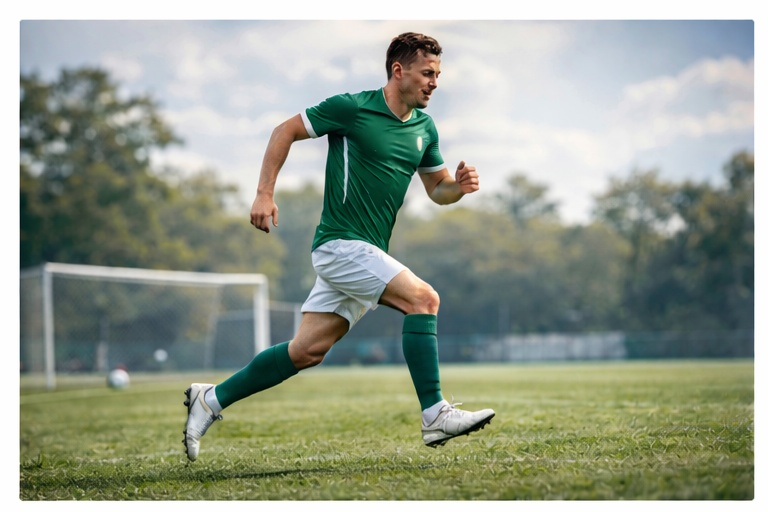
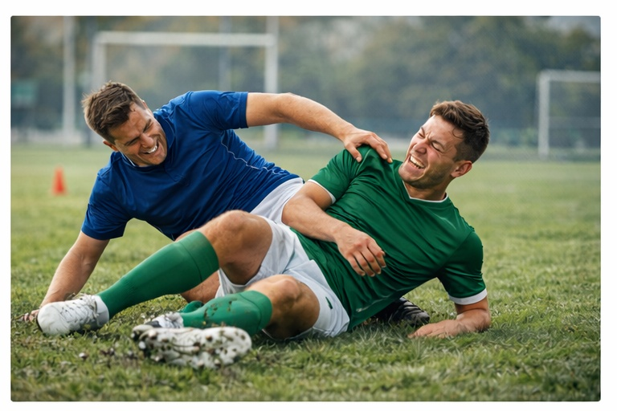
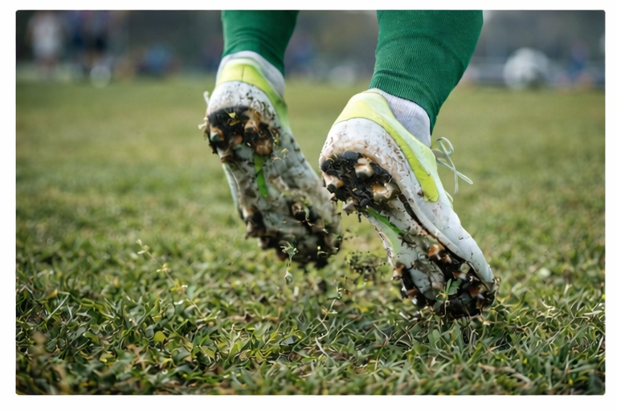
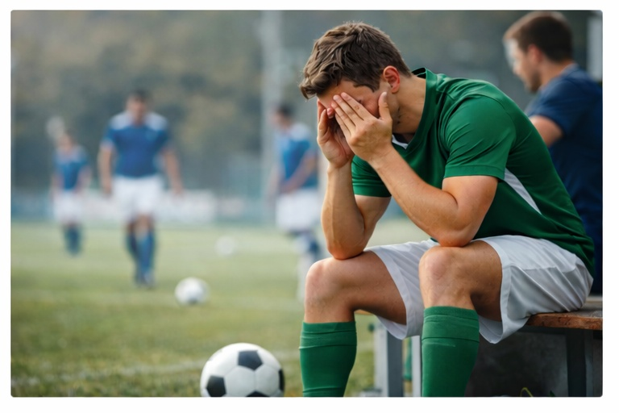

Боль в колене при игре в футбол
Футбол включает ускорения, повороты и контактные эпизоды — это создаёт высокую нагрузку на коленный сустав.
Боль в колене у футболистов часто возникает из-за сочетания резких ускорений, ударов по мячу и контактной борьбы. Если не корректировать нагрузку, это может привести к повреждению связок или менисков.
Основные причины
Резкие ускорения
Быстрые старты и остановки создают высокую нагрузку на связки колена.

Спринт и торможение увеличивают нагрузку на переднюю крестообразную связку.
Контактная борьба
Столкновения и подкат могут привести к травме сустава.

Контактные эпизоды часто становятся причиной травм колена.
Неподходящая обувь
Шипы и неподходящая обувь могут менять механику движения ноги.

Тип шипов и сцепление влияют на нагрузку на сустав.
Усталость мышц
Когда мышцы устают, снижается контроль над движением сустава.

Снижение стабилизации увеличивает риск травмы.
Другие ситуации с коленом
Если боль появляется во время игры — важно разобраться в её причине.
Записаться на консультацию